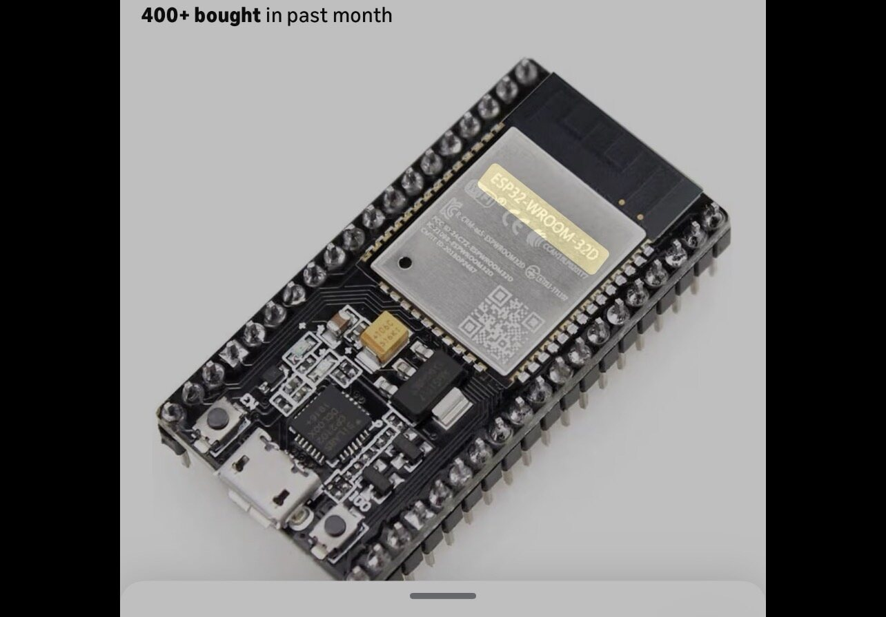
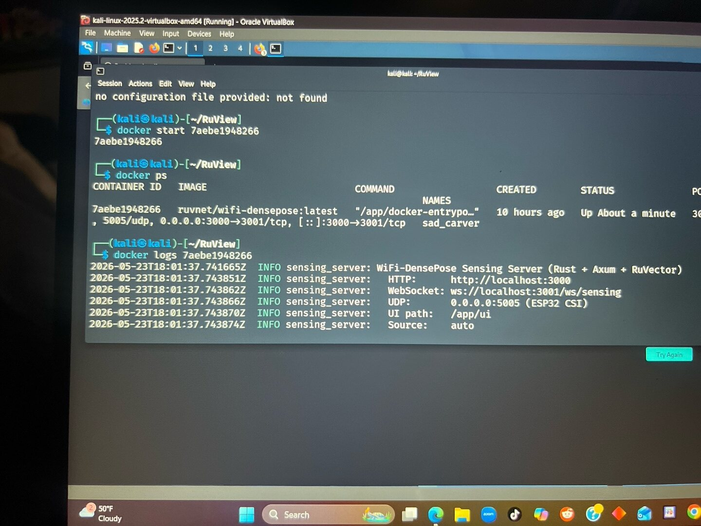
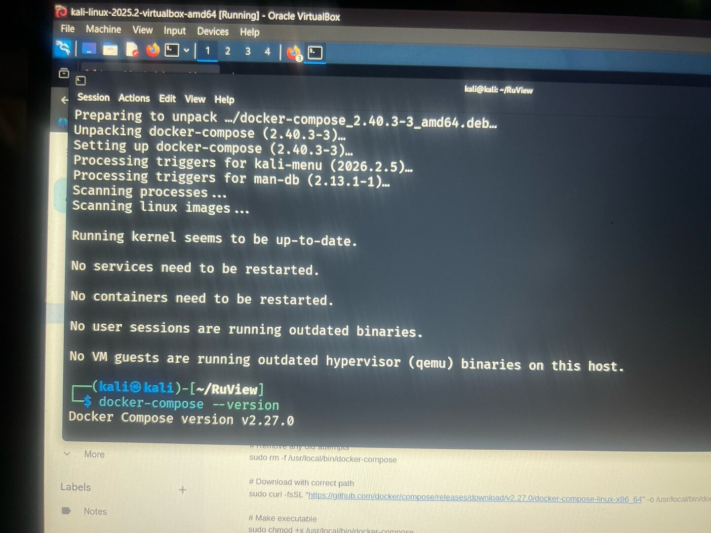
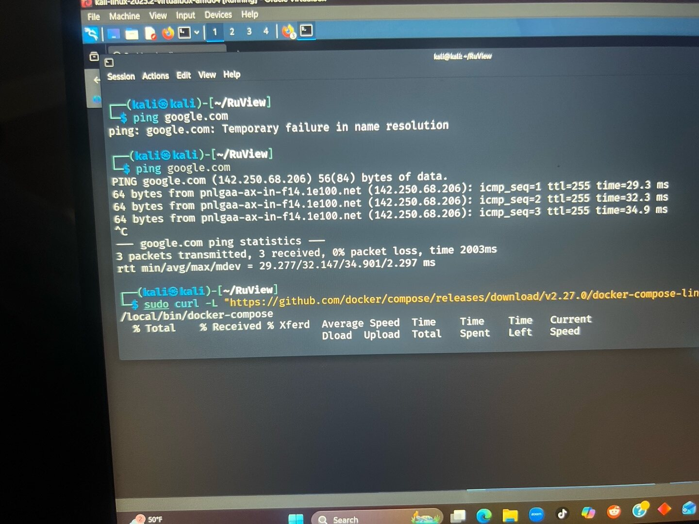
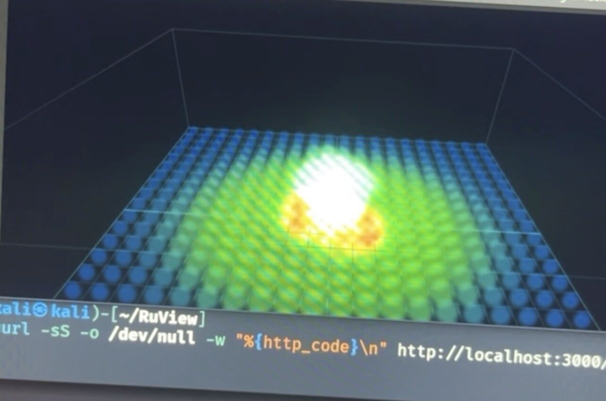
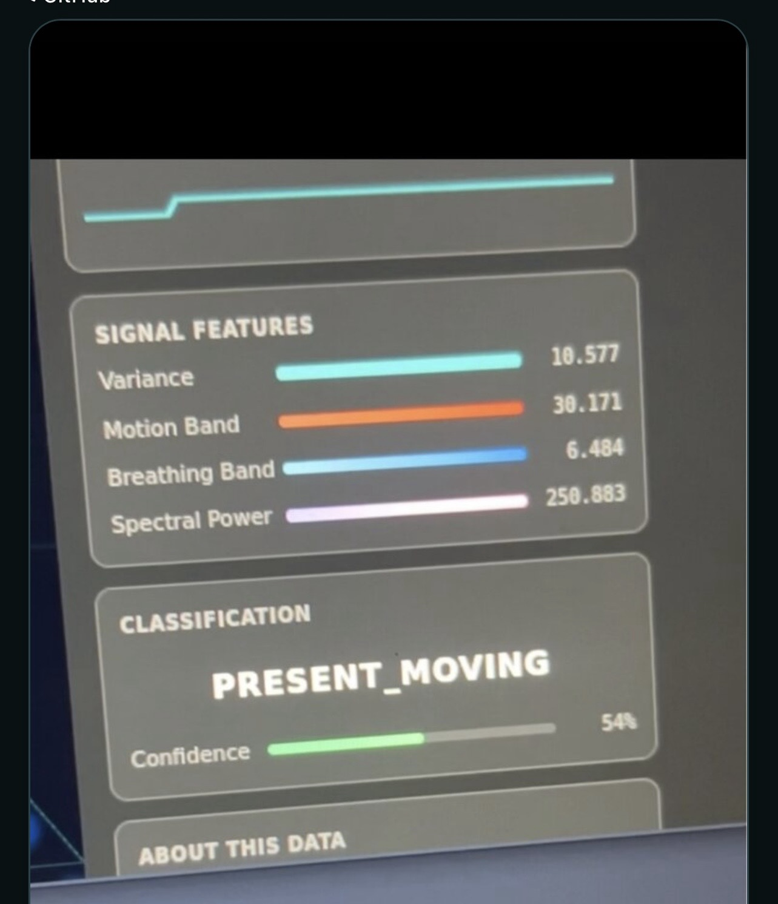

Kali VM, Docker image, backend, and dashboard running.
ESP32-S3 receivers ordered for multi-sensor CSI capture.
Firmware flashing, receiver placement, and hardware data flow.
Through-wall testing and room-specific calibration.
What the lab demonstrates
CSI-based sensing, not camera surveillance.
WiFi CSI captures fine-grained channel changes such as amplitude and phase variation across subcarriers. Human motion can affect WiFi paths through absorption, reflection, diffraction, scattering, and multipath interference. This lab documents the infrastructure needed to run the sensing stack and prepare for controlled hardware testing.
Honest status: the current build is operational in simulation mode. Hardware CSI capture, through-wall validation, heartbeat detection, and breathing-rate validation are not claimed as complete.
Architecture
Transmitter, receivers, and processing server.
Alfa AWUS036AC
WiFi transmitter
WiFi transmitter
ESP32-S2 / ESP32-S3
CSI receivers
CSI receivers
Kali Linux VM
Docker runtime
Docker runtime
RuView backend
Rust/Axum · 3000/3001/5005
Rust/Axum · 3000/3001/5005
Evidence
Build proof and screenshots.






PRESENT_MOVING classification view.Troubleshooting
What had to be fixed.
| Issue | Fix |
|---|---|
| VirtualBox NAT DNS failure | Set resolver to 8.8.8.8. |
docker-compose missing | Installed docker-compose on Kali. |
| Dashboard 404 | Pulled a fresh Docker image with UI assets. |
| Broken multi-line command | Used a single-line Docker command / full block paste. |
Ethics
Authorized lab use only.
Through-wall sensing is privacy-sensitive. This project is documented as a controlled lab build and should only be tested where all participants understand and consent to the sensing setup.